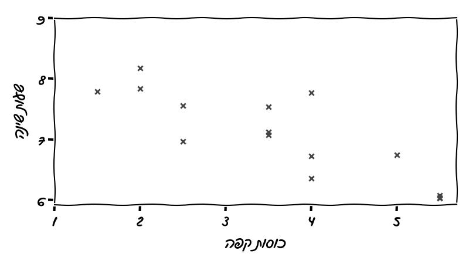

כיצד מבצעים ניסוי?
ביצוע ניסוי בצורה נכונה חיוני להסקת מסקנות מהימנות. ללא הקפדה על עקרונות מדעיים ברורים, תוצאות הניסוי עלולות להטעות ולגרום לפרשנות שגויה של הנתונים.

נניח כי אנו רוצים לבדוק האם שתיית קפה פוגעת באיכות השינה. לשם כך שאלנו קבוצת אנשים כמה כוסות קפה הם שותים ביום בממוצע וכמה שעות שינה הם ישנים בממוצע, וסידרנו את התשובות בתרשים הבא:

לפי התרשים, נראה כי אכן שתיית קפה פוגעת באיכות השינה. אך האם זו מסקנה נכונה? לא בהכרח, ויש לכך מספר סיבות:
-
הנתונים מבוססים על תשובות הנשאלים, וייתכן שהן לא מדויקות.
-
גם אם התשובות מדויקות, ייתכן שהמסקנה הפוכה. ייתכן, למשל, שאנשים שישנים פחות (מסיבות כאלו ואחרות) נוטים לשתות יותר קפה כדי להרגיש ערניים. ייתכן אפילו שהקשר בין שתיית קפה לשעות שינה הוא עקיף. לדוגמה, חלק מהאנשים שבדקנו עובדים בבית קפה, מסיימים את המשמרת מאוחר בלילה, שותים יותר קפה כי זה זמין ובחינם, וישנים פחות כי הם הולכים לישון מאוחר.
-
ייתכן שמספר האנשים שבדקנו קטן מדי, וההבדלים הם תוצאה של יד המקרה. ייתכן שאם היינו בוחרים קבוצת אנשים אחרת, היינו מקבלים תוצאה שונה, ואולי אפילו תוצאה הפוכה.
כדי להסיק מסקנות בצורה יותר אמינה כדאי לערוך ניסוי מבוקר הקצאה אקראית ניסוי כזה מתבצע במספר שלבים:
-
בשלב הראשון, יש להגדיר מה נחשב לשתיית קפה , למשל 2 כוסות קפה בשעה 17:00, וכן כיצד נמדוד את איכות השינה באופן אובייקטיבי, למשל על ידי חיבור הנבדקים למוניטור שינה.
-
לאחר מכן, יש לבחור מדגם מייצג מהאוכלוסייה שאליה רוצים להכליל את תוצאות הניסוי, כך שיהיה גדול מספיק בכדי לספק תוצאות מהימנות.
-
יש לחלק את המדגם באופן אקראי לשתי קבוצות: קבוצת טיפול וקבוצת ביקורת, בהעדפה לחלוקה שווה ככל האפשר. קבוצת הטיפול תשתה 2 כוסות קפה בשעה 17:00, בעוד שקבוצת הביקורת תמנע לחלוטין משתיית קפה.
-
את הנתונים שנאספו מנתחים באמצעות כלים סטטיסטיים מתאימים, כדי לבחון את השפעת הטיפול.
-
הניסוי יכול להוביל לשתי תוצאות אפשריות: 1. שתיית קפה פוגמת באיכות השינה באופן מובהק, או 2. לא נמצא הבדל מובהק. במקרה של התוצאה השנייה, ייתכן והדבר נובע ממדגם קטן מדי ולא בהכרח מחוסר קשר בין שתיית קפה לאיכות השינה.
מהו מדגם מייצג?
מדגם מייצג, כפי שמעיד שמו, הוא מדגם שנועד לשקף את כלל האוכלוסייה. לדוגמה, אם נרצה לקבוע אם יש להוסיף מלח למרק שמתבשל, נוכל לטעום כף אחת ממנו (המדגם) ולהסיק מסקנות על טעם המרק כולו. דגימה מייצגת של אוכלוסיית אנשים היא משימה מאתגרת ומורכבת, ולא נדון בה בפוסט הזה.
מדוע חשוב גודל המדגם?
מדגם קטן מדי עלול להוליך אותנו למסקנות שגויות. לדוגמה, נניח ששתיית קפה אינה משפיעה כלל על איכות השינה, ובחרנו מדגם של שני אנשים, יואב ויעל. נניח גם שאיכות השינה של יעל גבוהה משמעותית מזו של יואב. מה יהיו תוצאות הניסוי? אם יעל תשובץ לקבוצת הטיפול, נקבל לכאורה שלטיפול (שתיית קפה) יש השפעה חיובית על איכות השינה, ולהפך, בעוד שבפועל אין לו השפעה כלל. אינטואיטיבית, ככל שנבחר מדגם גדול יותר, הסיכוי לטעות כזאת ילך ויקטן. שימוש בכלים סטטיסטיים מאפשר לנו להעריך את הסיכוי לטעות כזאת, ומקובל להתייחס לסיכוי שמתחת ל-5% כסיכוי נמוך מספיק, ולהתייחס לתוצאת הניסוי כקבילה או מובהקת.
מה החסרונות של ניסוי מבוקר?
החיסרון העיקרי של ניסוי כזה הוא כמות המשאבים שהוא צורך: בחירת מדגם, מעקב אחר הנבדקים במשך כל תקופת הטיפול (לפעמים במשך שנים), ועלויות נוספות (כגון תשלום לנבדקים). לעתים עצם קיום הניסוי עלול להשפיע על תוצאותיו. לדוגמה, אם רוצים לבדוק האם לנטילת תרופה מסוימת יש תופעת לוואי שפוגעת באיכות השינה, ייתכן שהנבדקים, רק מעצם הידיעה שהם משתתפים בניסוי, יחוו ירידה באיכות השינה (שלא כתוצאה ישירה מהתרופה). במקרים כאלה, ניתן לנטרל את ההשפעה הזו על ידי מתן פלצבו לקבוצת הבקרה.
כדי לנטרל הטיות נוספות, ניתן לבצע את הניסוי בצורה עיוורת, כך שהמשתתפים ו/או עורכי הניסוי אינם יודעים לאיזו קבוצה כל נבדק שייך.
חסרון נוסף של ניסוי מבוקר הוא שלפעמים פשוט אי אפשר לבצע אותו. לדוגמה, אם רוצים לבדוק את השפעת סוג המשטר (דמוקרטי מול דיקטטורה) על כלכלת המדינה.
מחקר תצפיתי
בניגוד למחקר מבוקר, במחקר תצפיתי החוקרים אינם בוחרים את קבוצת הנבדקים, אלא משווים בין שתי אוכלוסיות שונות מבלי להתערב בהתנהגות שלהן. לדוגמה, אם היינו רוצים לבדוק את ההשפעה של טבילה במים קרים על לחץ הדם, היינו יכולים להשוות בין לחץ הדם של אוכלוסייה ששוחה במים פתוחים במהלך החורף, לבין זה של אוכלוסייה שאינה נחשפת למים קרים.
הבעיה העיקרית במחקר תצפיתי היא הקושי להסיק ממנו מסקנות חד-משמעיות. למשל, נניח שבדוגמה הנ"ל נמצא שלשחייני החורף לחץ דם נמוך יותר – האם ניתן להסיק שלחץ הדם הנמוך הוא תוצאה של חשיפה למים הקרים? אולי דווקא השחייה עצמה (ללא קשר לטמפרטורת המים) היא זו שמורידה את לחץ הדם?
קיימות שיטות להסיק מסקנות גם ממחקרים תצפיתיים, אך הן מורכבות ומותאמות בדרך כלל לכל ניסוי באופן פרטני.
חשוב לציין שמחקר תצפיתי, כאשר הוא מתבצע בצורה נכונה, אכן מראה על קשר בין שתי תופעות אבל זה איננו קשר סיבתי בהכרח. תוצאות של מחקרים תצפיתיים עלולות לנפק כותרות מוליכות שולל. דמיינו את הכותרת הבאה:
אנשים ששותים קפה ישנים פחות טוב בלילה
בעוד שייתכן שהתוכן של הכותרת נכון, הנטייה הטבעית שלנו היא להסיק מהכותרת שאם נמנע משתיית קפה נשפר את איכות השינה שלנו אבל, כאמור, זה לא נכון בהכרח.
סיכום
ניסוי מבוקר עם הקצאה אקראית הוא דרך טובה ומדויקת לבדוק אם יש קשר סיבתי בין גורמים, אך מדובר בתהליך מורכב ויקר שלא תמיד אפשרי. כדי להבטיח תוצאות אמינות, חשוב לבחור מדגם שמייצג את האוכלוסייה ולמדוד את המשתנים בצורה אובייקטיבית. ישנם אתגרים, כמו השפעה פסיכולוגית של עצם ההשתתפות בניסוי, אך אפשר לצמצם את השפעות אלה בעזרת פלצבו או ניסוי עיוור. כשלא ניתן לערוך ניסוי מבוקר, אפשר לבצע מחקר תצפיתי, אך אז נדרשות שיטות מורכבות יותר כדי להסיק מסקנות ברורות.

חלבונים
חלבונים חשובים לאורח חיים בריא בכך שהם תומכים בבניית שרירים, תיקון רקמות ושמירה על מערכת חיסון. צריכתם עוזרת לתחושת שובע ולניהול משקל, וחשוב לשלבם בתזונה מאוזנת יחד עם פעילות גופנית ושינה מספקת.

סוכר
צריכת סוכר מופרזת עלולה להוביל לבעיות בריאותיות כמו השמנה, סוכרת, מחלות לב, פגיעה בשיניים, מצבי דלקת ושינויים במצב הרוח.